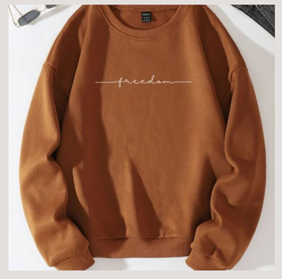
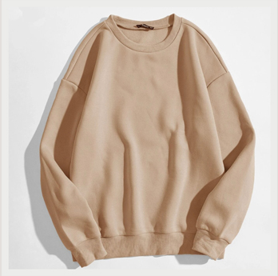

About SHEEPLY-K
SHEEPLY-K offers clothing that is stylish, made with 100% organic cotton, and guaranteed comfort for everyone. Each piece is designed and made carefully with our wearer in mind. Our priority is to offer the best quality we possibly can. Don't take our word for it, experience SHEEPLY-K for yourself.
 What We Promise
- Look and Feel Good!
- 100% Organic Cotton
- Made to last